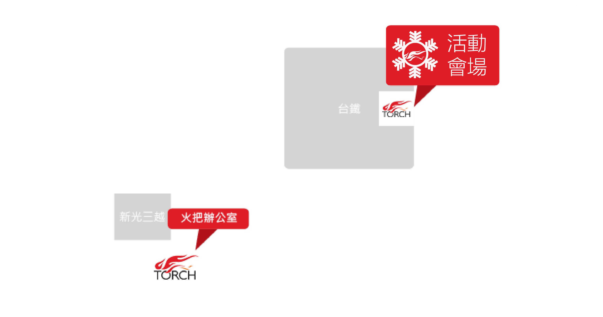

【第一個聖誕節】
我們說的不只是2000多年前的那個夜晚，
而是你生命中第一個真正的聖誕節。
入場資訊 |
12/24（六）
✓ 14：00-15：30 （13:40入場）
✓ 16：30-18：00 （16:10入場）
✓ 19：00-20：30 （18:40入場）
12/25（日）
✓ 10：00-11：30 （09:40入場）
✓ 12：30-14：00 （12:10入場）
✓ 15：00-16：30 （14:40入場）
活動地點 |
臺北車站六樓演藝廳（由東二門進入）

參加辦法 |
憑票入場（票券可於12/03起向火把教會小組長領取或於12/10起至主日櫃台免費索取）